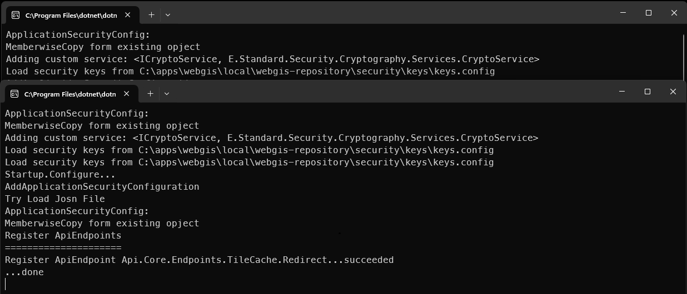
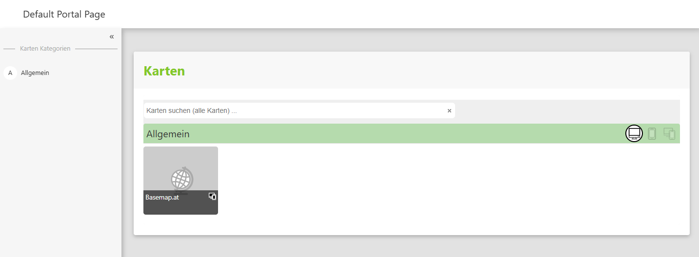
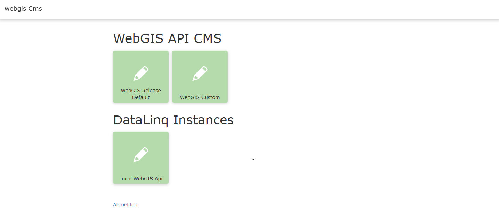

Running Locally (Windows Desktop Mode)¶
In the directory C:\apps\webgis there are two executable batch files. These can be used to start WebGIS locally. This means that WebGIS is started here like a desktop application.
For each individual application, a local web server is started and the applications are displayed via the browser.
C:\apps\webgis>
└── webgis
└── local
├── 7.25.701
│ ├── _requirements
│ ├── _scripts
│ ├── start-webgis-cms.bat
│ ├── start-webgis.bat
│ ├── webgis-api
│ ├── webgis-cms
│ └── webgis-portal
start-webgis.bat: Starts theWebGIS API(local web server on HTTP port 5001) and theWebGIS Portal(local web server on HTTP port 5002). In addition, a browser window is opened showing the WebGIS Portal.start-webgis-cms.bat: Starts theWebGIS CMSapplication on a local server on HTTP port 5003. In addition, a browser window is opened showing the CMS application.
Note
Before WebGIS can be operated in production, some configuration steps are necessary. Every application in the WebGIS package must contain a corresponding configuration file in the _config folder (api.config, portal.config, cms.config).
The configuration files are included in the installation package. However, a default configuration is created the first time the application starts. This can then be adapted to individual requirements.
See also the Configuration section.
The first time start-webgis.bat is started, it is checked whether a configuration file exists for the WebGIS API and WebGIS Portal applications (webgis-api/_config/api.config and webgis-portal/_config/portal.config respectively).
If this is not the case, a prototype of the WebGIS configuration is created. This can be adapted later. In addition to the configuration files, a webgis-repository directory is also created.
C:\apps\webgis>
└── webgis
└── local
└── webgis-repository
├── cms
├── configuration
├── db
├── output
└── security
Additional files required for the operation of WebGIS are stored there (map projects, CMS database, …).
Note
Some files in the webgis-repository are stored encrypted. The internal communication between the individual WebGIS web applications and login cookies are likewise encrypted.
The keys for this encryption are stored under webgis-repository/security/keys after the first start. The files contained there should not be shared with third parties.
If you operate WebGIS both on the internet/intranet and as an offline solution, the same keys should not be used for the offline solution as on the server. For an offline solution,
users receive a package with all program and configuration files.
When start-webgis.bat is started, two console windows open in which the local web servers run:

A browser window shows the WebGIS Portal application:

Note
Especially on the first start, some configuration files are created and copied. Unfortunately, it can happen that the WebGIS API starts more slowly and is not yet available in time for the WebGIS Portal.
In this case, WebGIS shows an error message (No connection could be made because the target machine actively refused it.). This error can easily be fixed by reloading the browser with F5.
As soon as the API has finished its initial configuration, the portal should display correctly.
The default configuration already provides a basic map. The tools offered in it (quick search for addresses, coordinate and elevation query, 3D model) already work as well.
If you want to integrate additional map services (WMS, ArcGIS Server services), this can also be done via the viewer’s user interface (Add services). If you want to reuse services in maps repeatedly,
this can be done via the WebGIS CMS web application. The general procedure for creating WebGIS maps is as follows:
Integrate services (WMS, AGS, …) into the CMS.
Configure specific properties of the services (possible queries, table of contents or display variants, editing forms, permissions).
Publish the CMS (this makes these settings visible to a WebGIS API instance).
Log in as administrator/map author to the WebGIS Portal, and from there open an existing map in the MapBuilder or create a new map directly via the MapBuilder.
In the MapBuilder, add the desired services and tools to a map.
Publish the map for the WebGIS Portal via the MapBuilder. This makes the map available to other users.
The WebGIS CMS can be started locally via the batch file start-webgis-cms.bat. A default configuration is also created on the first start.
Default credentials
The predefined credentials for the CMS system are:
User name:
authorPassword:
webgisauthor
Warning
If the CMS runs on a system other than a protected test system, or is publicly accessible, the default password must urgently be changed for security reasons! Otherwise there is a high risk of unauthorized access.
The application starts as a local server application (HTTP port 5003) and is displayed in a browser:

Default configuration of the WebGIS CMS trees
In the default configuration, two WebGIS CMS trees are created automatically:
``WebGIS Release Default`` - Contains predefined basic map services (e.g. Basemap.at). - This was created by the WebGIS developers and serves as an unchangeable base for map applications. - Changes to this tree are not recommended.
``WebGIS Custom`` - Your own services can and should be configured here. - This tree serves as an individual customization layer for specific requirements.
In addition, a tile for the base installation of DataLinq is shown. More information about this is available in the official DataLinq documentation.